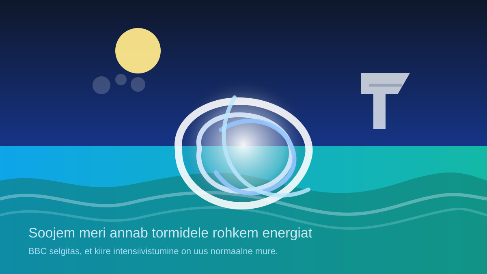

Kuidas tekivad orkaanid ja miks soojem meri neid võimendab?

BBC selgitab, et orkaanid, taifuunid ja tsüklonid on sama tormipere eri nimed. Kliimamuutus ei loo neid torme tühjast kohast, aga soojem ookean annab neile rohkem energiat — ehk täpselt seda kütust, mida üks halb päev ranniku jaoks ei vaja.
Tõsi, see ei tähenda, et iga torm oleks kohe automaatselt metsikum. Aga soojem õhk suudab hoida rohkem niiskust ning see tähendab rohkem vihma ja suuremat võimalust, et torm tugevneb kiiresti. Ilm ei tee siin dramaatilist monoloogi; ta lihtsalt teeb Exceli tabeli väga vihaseks.
Teadlaste jaoks on kõige olulisem just kiire intensiivistumine, sest siis ei aita hilinenud hoiatus ega lohakas taristu. Kui rand, sadam või elektrivõrk arvab, et torm tuleb vanade reeglite järgi, siis loodus kipub sama arvu uuesti mitte läbi mängima.
Loe algallikat: BBC News – "How climate change affects hurricanes, typhoons and cyclones"
selle artikli sisu sõnastatud AI poolt: (mudel gpt-5.4-mini)